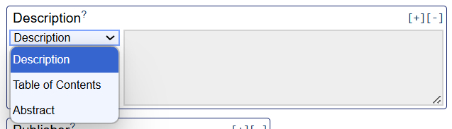
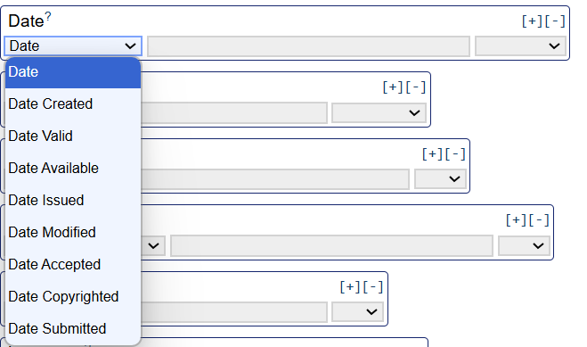

Unit 2.6 Creating metadata: study level
Unit overview
Unit study time
- 1.5 hours
Intended Learning Outcomes
By the end of the unit, you will ...
- Understand who needs to create metadata and recognise their role in metadata creation
- Be familiar with how to create metadata about a research project and identify what metadata elements to capture
- Know how to implement best practice (metadata standards and controlled vocabularies) in metadata creation
Creating metadata
How to approach metadata creation
We have covered the role of metadata in research and how we use it. In this unit, we'll explore creating metadata.
How do you decide what metadata to create?
What metadata you choose to create depends on the aims of your research and what you want to do with it. If your data is only for personal use, your metadata might only need to capture key details that will be useful for your current and future work. However, if you’re planning to share your research more widely and/or deposit it in a data repository or catalogue, you’ll likely need to create more metadata to help others understand and use your data. A data repository or catalogue, may also require you to follow a metadata schema to ensure your metadata is interoperable with the other studies on the site.
In this unit, we'll unpack creating study level metadata.
Creating metadata for a study
As we explored in unit 2.5, using a metadata standard or schema can help ensure our metadata is consistent and interoperable. It also saves us time as it provides deinfed elements and a clear structure so we don't have to create it from scratch.
A common cross-discipline standard is Dublin Core which is used across domains to describe a variety of resources including digital (web pages, datasets, images, videos) and physical (books, artifacts) objects[1]. The standard is expressed as a simple schema which contains 15 core elements[2]. In some cases, not all of the metadata elements may be relevant so you can adjust the standard to your needs.
Dublin Core gives definitions of the metadata elements and guidance around what data to input into the metadata fields. For example, for dates, they recommend adhering to ISO 8601-1 standard which specifies YYYY-MM-DD format.
Dublin Core Simple Metadata Generator
You can create Dublin Core metadata in any machine readable format.
For the following exercises, we will use an simple online generator developed by Nick Steffel. The aim of the tool was to simplify Dublin Core metadata creation by providing an online form to input information which can then be downloaded in a machine readable format.
Dublin Core Simple Generator [3]
Note, the Simple Generator was last updated in 2015 and the links to the metadata element definitions refer to old Dublin Core documentation. While the 15 core elements have stayed the same, the latest definitions for the metadata elements can be found here.
 Practice activity: Creating study level metadata
Practice activity: Creating study level metadata
Using the metadata generator, try creating metadata for the following research project ...
'Connection to greenspaces in capital cities across the UK' conducted by Joe Smith and Mary Jones collects data on residents of capital cities across the UK and their feelings toward greenspaces. Face-to-face interviews were conducted in September 2022 - June 2023 (London, Cardiff, Edinburgh, Belfast). The project consists of 4 datasets, one for each city. The interviews used Greenspace Connection Survey v2.0. Green Brick Org provided logistical support for the interviews. The dataset is published by Green City Data in 08/09/25. The dataset is stored in CSV and conducted in English. The data is open access with CC BY-NC rights. Note this is a fictional case study example for practice purposes only.
Click the box below to see an example of creating Dublin Core metadata for the research brief above.
Dublin Core Generator: metadata example
Through interpreting the information above, you could create the following metadata (or something similar)...

After completing the information, you can select a machine readable format such as XML, HTML, or XHTML to generate and save your metadata.

Challenges of the Dublin Core Simple Metadata Generator
What do you think some of the challenges could be around the metadata created by the simple generator? Expand the box below to explore some of the potential challenges.
Challenges of Dublin Core Simple Metadata Generator
While there are some guidelines around what information you should invlude for each metadata field, the simple generator does not refer to controlled vocabularies. This means metadata can be presented in different ways. This could decrease the quality of your metadata as well as it's interoperability.
While the metadata element definitions go some way to describing what you should capture in each metadata element, some are open to interpretation.
For example, in the 'Date' element could refer to: - Date the research was created - Date the metadata record was created - Date the data was published - Date data was submitted - Date data was last modifie
For example, for the research project we just explored, we could interpret the same information to provide slightly different metadata ...

How could we improve the quality of this metadata? What tools could we use?
We could refine the metadata element titles and/or definitions so they are more specific. This will help clarify what we are describing for example, we could change 'Date' to 'Date Published'
For some metadata elements, controlled vocabularies can help ensure metadata is standardised and clear to understand. Thinking back to unit 2.4, what are some of the metadata elements in the Dublin Core Simple Generator that could benefit from using a controlled vocabulary?
For example...
- Language
- Subject
- Date
- Type
- Format
- Coverage
Dublin Core Advanced Metadata Generator
Now explore the Dublin Core Advanced Metadata Generator[4].
What's the difference between the Simple Generator and the Advanced Generator?
What features and tools does it include in order to improve the clarity and quality of the metadata?
For some fields, the Advanced Generator provides a space to further specify the metadata element in order to avoid confusion...


For example, by having 'Date Available' as a metadata element, rather than the generic term 'Date', it is easier to understand that the metadata is describing when the resource was made available for external use.
The Advanced Generator also provides a list of controlled vocabularies that you could use and gives the functionality to specify which one you choose for a metadata field...

This helps you identify relevant controlled vocabularies, enabling you to make sure your metadata is consistent and interoperable (see unit 2.5 for more information about controlled vocabularies)
The Advanced Generator also includes seven further metadata elements:

 If you're currently working on a research project or have a resource you would like to create metadata for, try using the Dublin Core Metadata Simple or Advanced Generator to create study level metadata.
If you're currently working on a research project or have a resource you would like to create metadata for, try using the Dublin Core Metadata Simple or Advanced Generator to create study level metadata.
References
- [1] DCMI (2025) 'About DCMI'
- [2] DCMI (2025) 'Simple Dublin Core'
- [3] Steffel, N. (2015) Simple Generator A JavaScript/JQuery tool for working with Dublin core metadata code.
- [4] Steffel, N. (2015) Advanced Generator A JavaScript/JQuery tool for working with Dublin core metadata code.